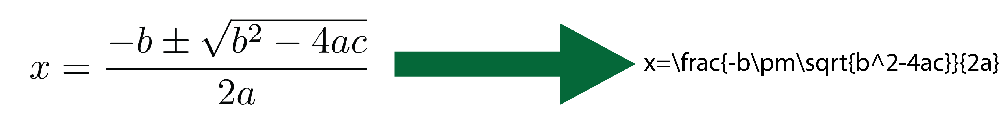
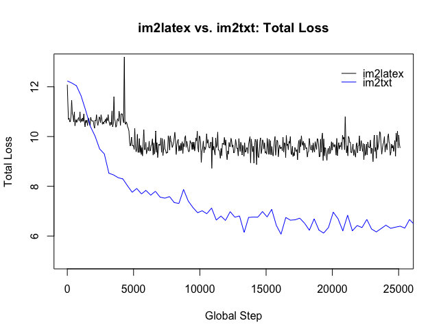
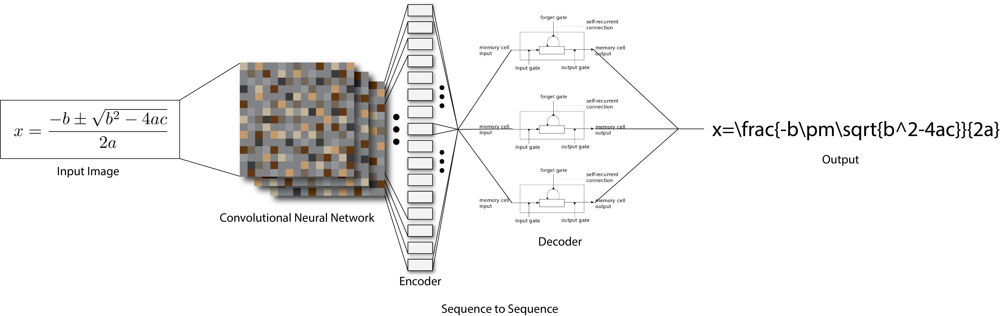

Abstract
The aim of this project was to create an intelligent system that could take images of mathematical equations and output a correct LaTeX representation of that equation. To accomplish the goals of the project two sub-branches of machine learning must be combined. First a convolutional neural network (CNN), a popular tool in image recognition, must be used to extract the features of the image. Then a sequence to sequence model is used to encode the rows of the CNN’s output and decode the resulting LaTeX output. Sequence to sequence models are a popular tool used in natural language processing. Thus, the overall strategy is to translate the pixels of an image into the language of LaTex. Furthermore, this project aims to compare three methods in their ability to perform the task. These methods are a Long-Short Term Memory(LSTM) model, a “show and tell” model, and a “show, attend, and tell” model.

Thus, the overall strategy is to translate the pixels of an image into the language of LaTex. Furthermore, this project aims to compare three methods in their ability to perform the task. These methods are a Long-Short Term Memory(LSTM) model, a “show and tell” model, and a “show, attend, and tell” model.
Experiment
As the actual implementation of this project is using existing and well developed techniques in machine learning, I found it more appropriate to compare the possible solutions to the given problem. The problem can be summarized as a translation from pixels to text, therefore our first solution will be a multi-layered translation LSTM model. The second solution is colloquially known as a show and tell model used for image captioning. The particular model I will be using is the im2txt model developed by Chris Shallue of Google [3]. This model consists of the InceptionV3 CNN as the encoder and a single LSTM layer as the decoder. The third model is my implementation of a show, attend, and tell model based off of Shallue’s work and the paper Show, Attend and Tell: Neural Image Caption Generation with Visual Attention by Kevin Xu et al [2].
In the metrics of interest in this experiment are the batch loss of the models while training and the resulting accuracy of the model when tested against unknown images. The training data will be a dataset developed by by Yuntian Deng et al [1]. The dataset consists of 100k images of mathematical equations and the corresponding LaTeX markup. The data will be split into subsets of train, validation, and testing at 80%, 10%, and 10%.
Results

The results of my experiment were not as expected. The plain LSTM model did not have enough degrees of freedom to converge and had loss values much greater than 100. The im2txt model outperformed the im2latex model in loss but still converged to a loss that results in unusable predictions. There are several contributing factors to this, most related to the hyper-parameters, such as the initial learning rate and the number of layers in the LSTM networks. Some, like the tokenization of the LaTeX formula also contribute to the very large loss.
Methods
SUMMARY:
- Image is fed to CNN
- CNN output is fed as the initial state to LSTM-RNN
- Correct formula is fed to LSTM-RNN at each row of CNN output
- Loss is calculated and optimized by an Adam Optimizer

To simplify work with TensorFlow the data was converted to TFRecords with the image encode as a byte string and the formula tokenized and transformed to the corresponding vocabulary Ids.
The TFRecords are read by the model which results in an Image that is resized to 750 by 750 pixels. This image is fed into a convolutional neural network (CNN) for feature extraction.
The resulting output of the CNN is reshaped and used to build the initial state of the LSTM-RNN. The LSTM-RNN is fed the correct formula at each row of the CNN output (~time-step) during training.
The resulting loss is calculated using the final output from the LSTM-RNN and optimized during training using an Adam Optimizer.
Conclusions and Future Work
As discussed in the results section, the experiment failed to produce the expected results. However, as there have been similar work done it is not a underlying issue in the hypothesis, but an issue in the experiment parameters. I would like to repeat the experiment with adjustments to the hyper-parameters of the im2txt and im2latex models. I would also like to try a more advanced sequence to sequence model using embedding and attention as opposed to the simple LSTM model.
The major failing point of both the im2txt and im2latex models is the very large vocabulary produced by the simple tokenizer used in building the data set. I feel that if a more advanced tokenizer was used to build the data set and resulting vocabulary, thus resulting in a much smaller vocabulary size, much better results would be produced.
Finally, I would like to compare using my purpose built CNN in the im2latex model with an im2latex model using Inception V3 as the CNN. I initially believed that the Inception CNN would provide to much information to the LSTM-RNN, however I now believe that it would aid in performance.
Acknowledgements
I would like to acknowledge the wonderful TensorFlow team and the great product they have so freely contributed to the community. I would also like to acknowledge the excellent implementation of Chris Shallue. From Shallue’s implementation I was able to quickly grasp TensorFlow and implementing machine learning with the package. Finally, I would like to acknowledge Yuntian Deng et al, for the amazing set of LaTeX data they have created.